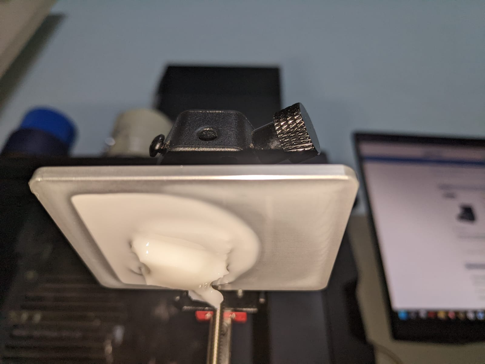
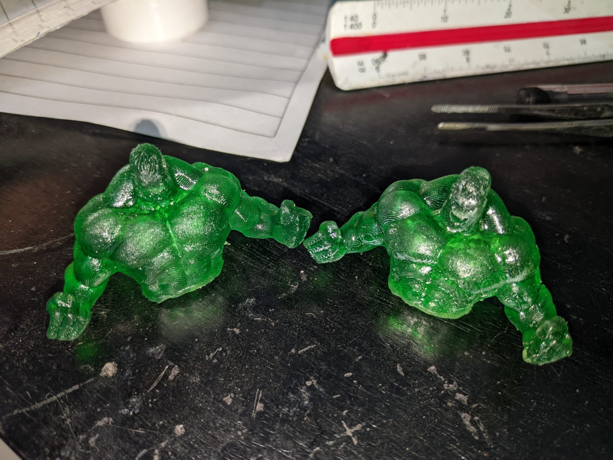

Well, technically, I don't own the printer. It's something my brother brought from his office, but it's something that I can use anytime I want.
Lite3Dp is a self-assembly kit that comes with all the parts you need. This printer is possibly one of the cheapest SLA 3D printers you can buy off the market. I have been eyeing this printer for a very long time. even before it started shipping in its crowdfunding campaign. How could one possibly develop and sell a 3D printer for just about $100? Even the Chinese printers on the market aren't $100. When it comes to India, we have higher prices, added taxes, and duties on all the products. All the printers sold here are imported from either the USA or China.
Getting this printer to print as intended took a lot of work in my busy schedule. It was very exciting when I first got this printer, but as time passed, I started to get frustrated about it. It was unclear how a simple resin printer could't print as intended, but I later learned about how all this works and started figuring out how exactly a resin printer works.
I joined the Lite3Dp unofficial discord and it helped a lot. I started reading all the old conversations from their discord server. It helped me understand why I was facing a certain (overexposure) issue on my 3D printer, and I wasn't the only one. Another user pointed out that the LED was too close and had to be placed further away from the LCD. This made a lot of sense. I noticed that at any exposure, my printer would make flat planes. I sought help from their discord. They suggested a mod that increases the height from the UV LED to the LCD.
So, I began printing this new mod for Lite3Dp on my regular FDM printer. As soon as I installed this new mod for the printer, I started feeling positive about the printer again. This didn't go too well for long. The test piece that I was printing took only 10 minutes to print.
I tried printing a random frog from Thingiverse. I may be able to call it a success. As the basic shape of the model was printed The part didn't print well on both sides. It was incomplete and had signs of under-exposure on one side. The UV LED light wasn't diffusing the light uniformly. This was causing the issue. I later fixed this issue by adding thicker support.
Now, I'm getting great acceptable prints. All the effort seems to have paid off. Now I know how to operate an SLA 3D printer, and I will be capable enough to troubleshoot most SLA printers in the future.
I can call this design a bit rushed as the rigidity of this machine is very bad and worse than I expected. My initial plan was to be able to cut aluminium on this. Woods and plastics are what this cuts the best.
The mess this printer makes.
One of the many failed prints.
Low UV exposure on one side.
Ruined my Granite desk with this resin :(
Washing the prints in IPA.
This is the first successful print.
Second print which failed only on one side. (Its putin and Hulk because he was attacking Ukriane during this time)
Washed and cured cube lettice structure.
The above prints are of a yellow emoji man also called emotiguy.
My most successful print so far. Real Hulk keychain!
-->